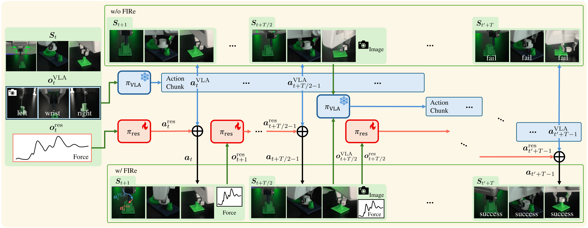
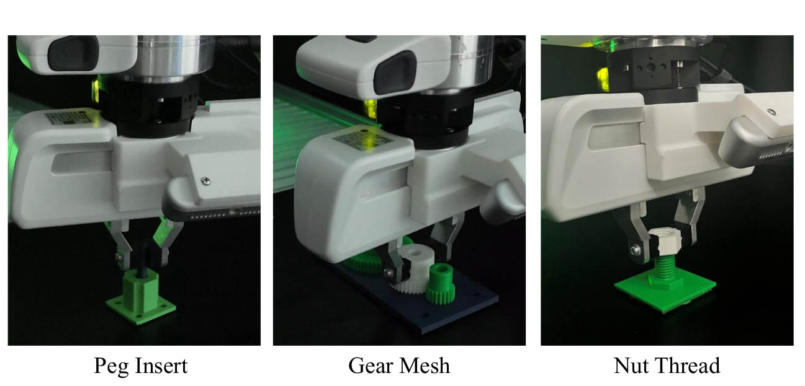
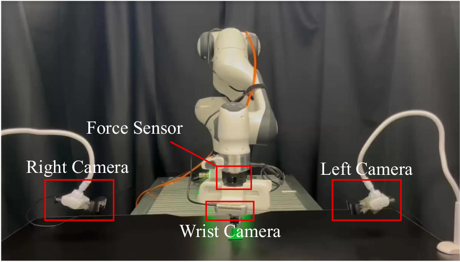
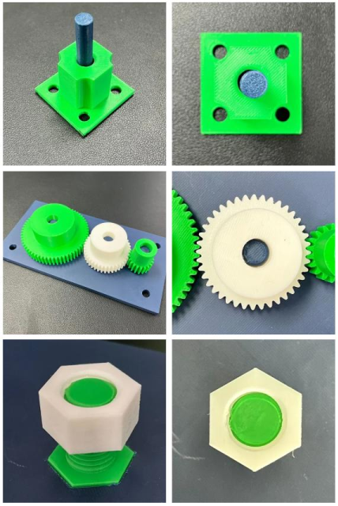
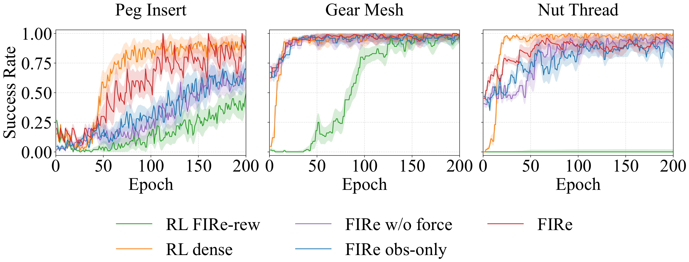
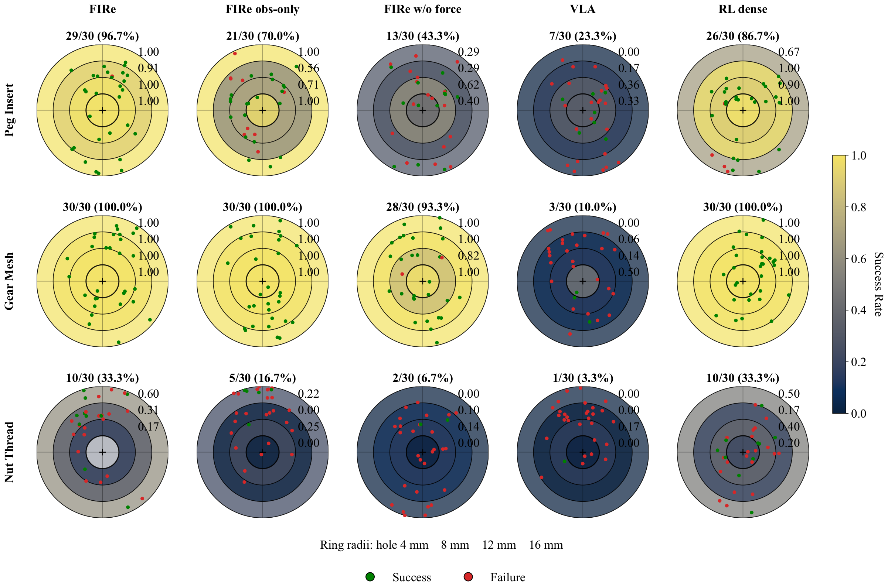
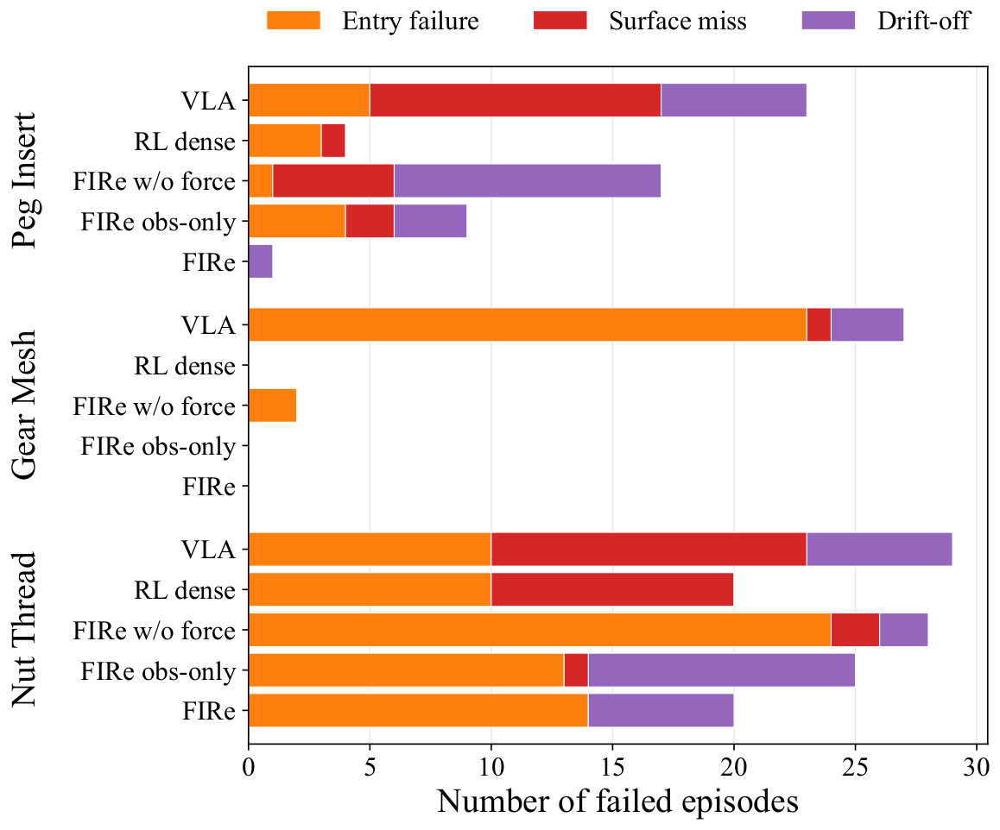

FIRe: Force-Informed Residual Policy for Contact-Rich Manipulation with Vision-Language-Action Models
Abstract
Vision-Language-Action (VLA) models adapt to manipulation tasks from a few demonstrations, but remain brittle in contact-rich assembly, where visual observations poorly capture contact state and chunked VLA actions cannot react at the control rate. We present FIRe (Force-Informed Residual Policy), which augments a frozen, action-head fine-tuned VLA with a force-aware residual RL policy. The VLA provides long-horizon action chunks, while the residual policy runs at every control step, observes force, and adds bounded corrections through a slow-fast asynchronous loop. Trained in simulation with only a sparse task-success reward and a task-agnostic force-aware dense reward, FIRe transfers zero-shot to a real Franka FR3. On three real-robot assembly tasks, Peg Insert, Gear Mesh, and Nut Thread, it improves success over the VLA base policy by an average of 64.5 percentage points (up to 90.0), matching or exceeding an RL policy trained with task-specific dense rewards while requiring no such reward engineering. Moreover, the same residual policy transfers across the GR00T, π0.5, and OpenVLA backbones without architectural changes, improving every backbone on every task.
Methodology

Overview of FIRe. Without FIRe (top row), the frozen VLA executes its action chunks open-loop and the insertion fails. With FIRe (bottom row), the force-aware residual policy \(\pi_{\mathrm{res}}\) corrects every action of the chunk at the control rate, and the same task succeeds.
FIRe forms the final control command by adding the corrective output of a residual policy to the base action of a frozen VLA. The VLA generates an action chunk of length \(T\) from visual and language inputs and functions as a trajectory planner providing long-horizon guidance; the residual policy \(\pi_{\mathrm{res}}\) observes proprioception and contact force at every control step and functions as a closed-loop contact controller. Because the VLA weights are never modified — only its action head is fine-tuned before freezing — the formulation is compatible with any VLA that produces action chunks, validated on the GR00T, \(\pi_{0.5}\), and OpenVLA backbones.
Two Policies, Two Observations
Each policy sees only what its role requires, so the two specialize cleanly: the VLA carries the visual and semantic context, while the residual owns the contact state — a signal that stays informative even when the end-effector occludes exactly the region where precision matters.
\( o_t^{\mathrm{VLA}} = \{\, \{I_k\},\; p_{ee}^{abs},\; \ell \,\} \)
RGB images \(\{I_k\}\) from two external cameras and one wrist camera, the absolute end-effector pose \(p_{ee}^{abs} \in \mathbb{R}^7\), and a natural-language task instruction \(\ell\). Absolute coordinates, rich in semantics, no force — read only when a new chunk is generated.
\( o_t^{\mathrm{res}} = \{\, p_{ee}^{rel},\; v_{ee},\; F_t,\; a_{t-1} \,\} \)
End-effector pose \(p_{ee}^{rel} \in \mathbb{R}^7\) relative to the fixed object (e.g., the hole), end-effector velocity \(v_{ee} \in \mathbb{R}^6\), contact force \(F_t \in \mathbb{R}^3\) from the wrist sensor, and the previously executed command \(a_{t-1}\).
Residual Action Composition
Both policies act in the same relative-pose representation — a 3-DOF position offset and a 3-DOF rotation offset of the end-effector, expressed in its current frame. The residual output is a bounded correction \(a_t^{\mathrm{res}} \in \mathbb{R}^6\), so the final command is a direct sum,
\[ a_t = a_t^{\mathrm{VLA}} + a_t^{\mathrm{res}}, \]executed by a task-space impedance controller at 1 kHz while the policies run at 15 Hz, with commands interpolated in between. Bounding \(a_t^{\mathrm{res}}\) keeps the VLA in charge of where the motion goes, while the residual decides how the contact is negotiated.
Slow-Fast Asynchronous Deployment
A single VLA inference takes longer than one control step, so waiting for it would stall the controller exactly when contact demands reactivity. FIRe instead prefetches the next chunk asynchronously at the midpoint of the current one and swaps it in once the current chunk is exhausted — the control loop never blocks, and the residual keeps correcting at a fixed rate throughout.
Algorithm 1 FIRe deployment control loop
Require: frozen VLA \(\pi_{\mathrm{VLA}}\), residual policy \(\pi_{\mathrm{res}}\), chunk length \(T\)
- observe \(o^{\mathrm{VLA}}\); \(\mathbf{a}^{\mathrm{VLA}} \leftarrow \pi_{\mathrm{VLA}}(o^{\mathrm{VLA}})\); \(i \leftarrow 0\) (initial blocking chunk)
- while episode not terminated do
- observe \(o^{\mathrm{res}}\)
- if \(i = \lfloor T/2 \rfloor\): observe \(o^{\mathrm{VLA}}\); prefetch the next chunk (non-blocking)
- if \(i = T\): swap in the prefetched chunk; \(i \leftarrow 0\)
- \(a^{\mathrm{res}} \leftarrow \pi_{\mathrm{res}}(o^{\mathrm{res}})\) (every control step)
- execute \(a = a^{\mathrm{VLA}}_{i} + a^{\mathrm{res}}\) with the task-space impedance controller
- \(i \leftarrow i + 1\)
- end while
A Reward That Never Needs Re-Engineering
RL for contact-rich assembly usually lives or dies by a dense reward engineered anew for every task. FIRe removes that dependency: the goal-directed guidance such rewards normally provide comes from the VLA base action instead, which warm-starts exploration near the goal. What remains is a sparse success indicator plus a task-agnostic force term — the FIRe reward (FIRe-rew), identical in form and hyperparameters across all tasks:
\[ r = r_s + r_f, \qquad r_s = 1[\text{success}], \qquad r_f = r_p + r_{sh} \]The direct penalty bounds the contact force by penalizing the instantaneous exceedance of a reference level \(F_{\mathrm{ref}}\),
\[ r_p = -\alpha \cdot \max\left(0,\; \lVert F_{t+1} \rVert - F_{\mathrm{ref}}\right), \]while the shaping term rewards any transition that reduces the exceedance,
\[ r_{sh} = \lambda_f \left( \gamma\, \phi_f(s_{t+1}) - \phi_f(s_t) \right), \qquad \phi_f(s) = -\log\!\left( c_f \cdot \max\left(0,\; \lVert F(s) \rVert - F_{\mathrm{ref}}\right) + 1 \right). \]Being potential-based, \(r_{sh}\) densifies the learning signal during over-force contact without altering the optimal policy. Both force terms vanish at or below \(F_{\mathrm{ref}}\), so \(r_f\) gives no incentive to make or avoid contact — the drive toward contact comes from \(r_s\) and the VLA base action, and \(r_f\) only shapes how contact unfolds.
Training: Asymmetric Actor-Critic, Zero-Shot Transfer
The residual policy is trained with PPO in Isaac Lab using an asymmetric actor-critic: the actor uses only the deployment-accessible observation \(o_t^{\mathrm{res}}\), while the critic additionally receives the privileged simulator state
\[ s_t = \{\, o_t^{\mathrm{res}},\; q_j,\; p_h,\; p_h^{rel},\; p_f,\; k_p,\; \epsilon_{p},\; F_{\mathrm{ref}} \,\} \]— joint positions, held- and fixed-object poses, the low-level controller gain, the success threshold, and the reference contact force. Following FORGE, domain randomization and observation noise on the pose and force inputs bridge the sim-to-real gap; the trained policy is deployed zero-shot on the real Franka FR3 with no real-world fine-tuning.
Experiments
We evaluate FIRe with five research questions:
- RQ1: Without any task-specific dense reward, does FIRe reach success rates comparable to an RL policy trained with such rewards in simulation?
- RQ2: Under an identical training budget, does the VLA warm-start enable FIRe to learn where from-scratch RL trained with the same FIRe-rew fails or converges slowly?
- RQ3: On a real robot, does FIRe achieve higher success on contact-rich assembly than the VLA base policy and an RL policy trained with task-specific dense rewards?
- RQ4: Do the force observation and the force-aware reward in the residual policy each contribute to real-world success?
- RQ5: Can the residual formulation be applied across different action-chunking VLA backbones?
Experimental Setup

Real-robot execution snapshots of the three contact-rich assembly tasks. The tasks require precise contact regulation beyond visual observation alone.

(a) Real-robot platform

(b) Task parts
Experimental setup. (a) The real-robot platform is a Franka FR3 arm with a wrist-mounted 3-axis force sensor and three cameras. (b) The three assembly tasks are Peg Insert, Gear Mesh, and Nut Thread, which use 3D-printed parts.
Baselines and ablations. VLA executes the action-head fine-tuned VLA without residual correction. RL dense is trained from scratch with a task-specific dense reward (FORGE), requiring three distinct reward functions for the three tasks, whereas FIRe uses the identical FIRe-rew on all tasks. RL FIRe-rew trains the same from-scratch controller with FIRe-rew, isolating the VLA warm-start under a matched reward. FIRe w/o force removes Ft from both observation and reward; FIRe obs-only keeps Ft in the observation but removes the force-aware reward.
Simulation Performance and Sample Efficiency (RQ1, RQ2)
FIRe reached peak success rates of 100% on Peg Insert, 100% on Gear Mesh, and 97% on Nut Thread — comparable to RL dense (94%, 100%, 100%) without any task-specific reward engineering (RQ1).
Under a matched training budget (RQ2), the VLA warm-start proved decisive. On Peg Insert the from-scratch RL FIRe-rew plateaued around 40% and never reached 50%, whereas FIRe surpassed 80% around epoch 107. On Gear Mesh both converged, but FIRe reached 80% by epoch ~15 versus ~101 for RL FIRe-rew. On Nut Thread, RL FIRe-rew remained at 0% throughout training while FIRe surpassed 80% around epoch 37.

Simulation learning curves (episode success rate vs. training epoch) under a matched budget across methods. Shaded bands indicate variation across three seeds.
Real-World Success and Robustness (RQ3, RQ4)
Across the three tasks, FIRe improved over the VLA base policy by +73.4, +90.0, and +30.0 percentage points. On Peg Insert it reached 96.7% versus 23.3% for the VLA base policy, on par with RL dense (86.7%) — matching a dense-reward RL policy with no task-specific reward engineering (RQ3). RL dense's 86.7% closely matches the 84% reported for FORGE under comparable conditions, indicating the real-robot setup is faithful. The same action-head fine-tuned VLA attained 96.7% on a pick-and-place task that does not require precise contact regulation, so the low VLA numbers are specific to contact-rich interaction rather than an artifact of fine-tuning.
| Method | Peg Insert | Gear Mesh | Nut Thread |
|---|---|---|---|
| VLA | 23.3% (7/30) | 10.0% (3/30) | 3.3% (1/30) |
| RL dense | 86.7% (26/30) | 100.0% (30/30) | 33.3% (10/30) |
| FIRe w/o force | 43.3% (13/30) | 93.3% (28/30) | 6.7% (2/30) |
| FIRe obs-only | 70.0% (21/30) | 100.0% (30/30) | 16.7% (5/30) |
| FIRe (ours) | 96.7% (29/30) | 100.0% (30/30) | 33.3% (10/30) |
| Inc. over VLA (%p) | +73.4 | +90.0 | +30.0 |
Real-robot task success rates over 30 trials per method. Parentheses give successful over total trials; the last row is FIRe's gain over the VLA base policy in percentage points (%p).
Force ablation (RQ4). Adding the force observation (FIRe obs-only) raised Peg Insert success over the force-blind FIRe w/o force from 43.3% to 70.0% (+26.7 %p), and additionally introducing the force-aware reward (FIRe) raised it to 96.7% (a further +26.7 %p, i.e. +53.4 %p over the force-blind baseline). Both components contributed substantially — each was necessary, and neither alone was sufficient.

Real-world robustness under initial XY pose perturbations (initial-noise centers aligned across methods), with rows for Peg Insert, Gear Mesh, and Nut Thread and columns for the five methods, where VLA is the GR00T base policy. Concentric rings mark initial XY perturbation radii of 4, 8, 12, and 16 mm from the true target position; on Peg Insert the innermost ring coincides with the hole itself. Per-ring success rates are annotated, and each panel reports the overall success rate. Green markers indicate successful trials and red markers indicate failures.
On Peg Insert, FIRe sustained near-perfect success across the full perturbation range, while RL dense degraded at large perturbations and the force-blind ablation failed across most of the range. The per-episode failure-mode breakdown explains how each use of force helps. The force-blind FIRe w/o force failed predominantly by drift-off (11 of its 17 failures). Adding the force observation reduced drift-off failures from 11 to 3, though 4 entry failures and 2 surface misses remained; adding the force-aware reward then cleared the rest, reducing total failures from 9 to 1. Thus the force observation enabled the closed-loop alignment needed to locate the hole, while the force-aware reward removed the residual entry failures.

Per-episode failure modes for the three tasks (real robot), with one bar per method stacked by geometric failure type.
On Nut Thread, each added use of contact force improved success monotonically (6.7% → 16.7% → 33.3%), corroborating RQ4. Most failures (about 60%) were aligned but not threaded, with a final lateral error statistically indistinguishable from that of the successes (1.32 vs 1.38 mm, Mann–Whitney p = 0.92). The bottleneck was therefore thread engagement rather than lateral alignment, consistent with FORGE's observation that thread engagement is not observable from the EEF pose.
VLA-Only vs. FIRe on the Real Robot
For each task, five successful FIRe rollouts alongside a representative failure from the frozen VLA base policy running alone.
Peg Insert
✓ FIRe
✗ VLA Only
Gear Mesh
✓ FIRe
✗ VLA Only
Nut Thread
✓ FIRe — Success
✗ FIRe — Failure
Both panels run the same FIRe policy — the failures reflect the remaining limitation of the Nut Thread task rather than a policy difference. Even failed trials end with the nut aligned on the bolt; the bottleneck is thread engagement itself, which is not observable from the end-effector pose. Successful trials conclude with the manual liftability check used as the success criterion.
Pick & Place
✓ VLA Only
A pick-and-place task that does not require precise contact regulation. The action-head fine-tuned VLA (GR00T backbone), trained on 128 teleoperated demonstration episodes, attains 96.7% here without any residual correction — confirming that the VLA's failures are specific to contact-rich interaction.
Generalizability Across VLA Backbones (RQ5)
The residual formulation plugs into an action-chunking VLA backbone without architectural changes. The only requirement is that the backbone produces compatible 6-D EEF relative-pose action chunks, so the residual policy can add corrections in the same representation. The same residual policy improved every backbone on every task, though the size of the gain varied.
| Backbone | Peg Insert | Gear Mesh | Nut Thread | |||
|---|---|---|---|---|---|---|
| VLA | +FIRe | VLA | +FIRe | VLA | +FIRe | |
| GR00T | 23.3% | 96.7% | 10.0% | 100.0% | 3.3% | 33.3% |
| π0.5 | 20.0% | 96.7% | 66.7% | 100.0% | 0.0% | 13.3% |
| OpenVLA | 56.7% | 90.0% | 93.3% | 100.0% | 3.3% | 16.7% |
VLA-only and VLA+FIRe success rate across backbones and tasks. Values are real-robot success rates.
Appendix
Implementation Settings
Shared across tasks and methods.
| Setting | Value |
|---|---|
| Task and success criteria | |
| Peg diameter | 8 mm |
| Peg–hole radial clearance | 0.08 mm |
| Success tol., Peg Insert | lateral ≤ 5 mm, depth ≤ 25 mm |
| Success tol., Gear Mesh | lateral ≤ 10 mm, below surface |
| Success tol., Nut Thread | nut not liftable (manual) |
| Low-level control and action | |
| Residual action ares (bounded) | ∈ ℝ6 |
| Residual policy rate | 15 Hz |
| Impedance controller rate | 1 kHz |
| VLA action-chunk length T | 16 control steps |
| FIRe-rew hyperparameters | |
| Force-penalty scale α | 1 × 10−5 |
| Shaping scale λf | 1 × 10−5 |
| Potential coefficient cf | 1.0 |
| Reference contact force Fref | 10 N (eval; randomized in training) |
| Training (PPO, asymmetric actor–critic) | |
| Parallel environments | 64 |
| Training epochs | 200 |
| Checkpoint selection | best success rate |
PPO Hyperparameters
The remaining PPO hyperparameters referenced in the paper. Identical across all methods and tasks.
| Parameter | Value |
|---|---|
| Learning rate | 1 × 10−4 |
| Discount γ | 0.995 |
| GAE λ | 0.95 |
| Clip ratio | 0.2 |
| Entropy coefficient | 0 |
| Rollout horizon | 128 |
| Minibatch size | 512 |
| Update epochs per rollout | 4 |